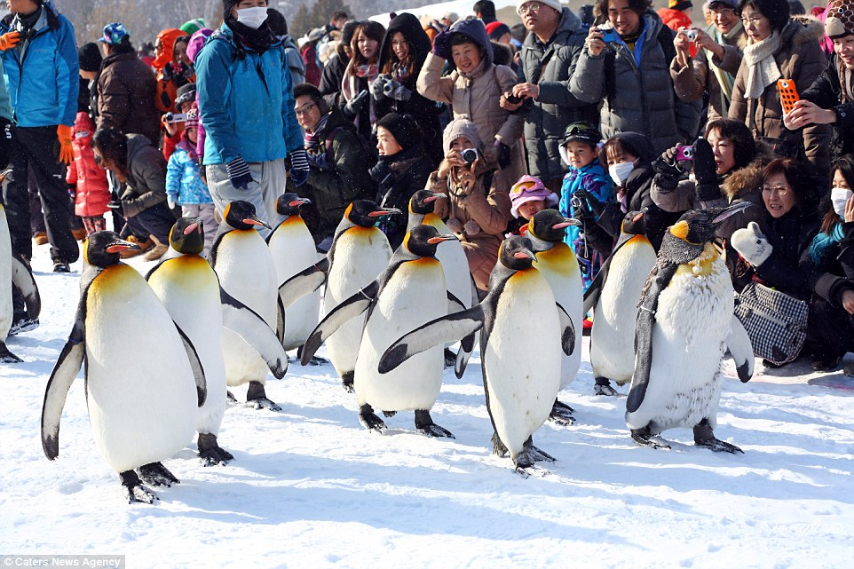
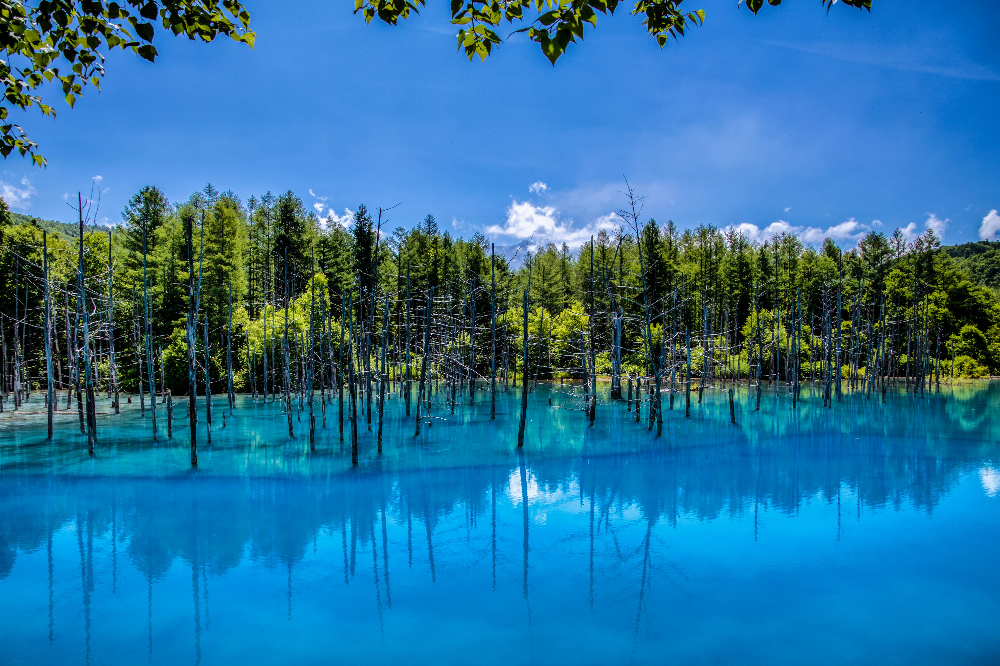
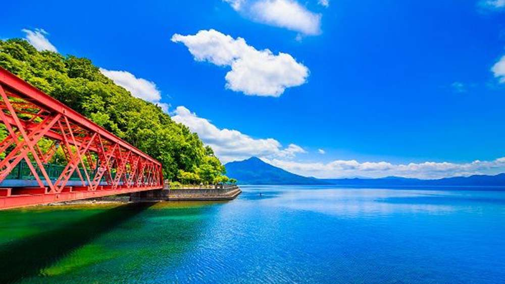
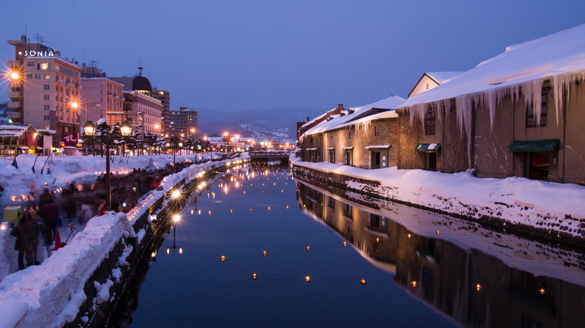
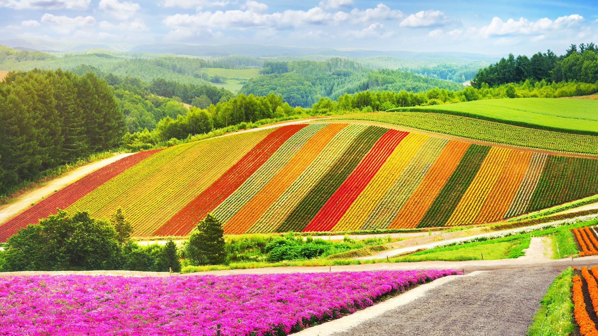

- Immerse yourself in the charm of Hokkaido's snowy and pristine winter landscape
- Get up close and personal with penguins and racoons at the popular Asahiyama Zoo
- Marvel at the iconic Biei Aoike, made famous by Apple's default desktop photos
- Explore the wonders of Biei Blue Pond and admaire the serene turquoise waters
- Discover the whimsical playground of Ningle Terrace and buy a handmade souvenir

